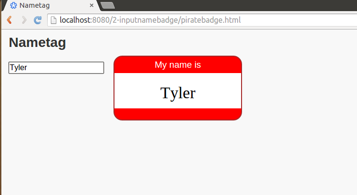
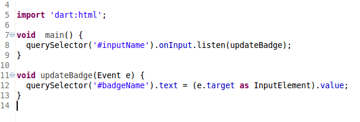

Dart
Developed By

Lars Bak
Kasper Lund
Uses
- Web Programming
- Designed to be easy to write
- Ultimately replace JS
- Dartium
Why do programmers use it?
- Not much data
- Doesn't seem too useful
- Only compatible with Dartium
- Can be compiled into JS with dart2js
Similar Languages
- JavaScript
- C
- Syntax
- Java
- Syntax
- Smalltalk
- Educational
- Erlang
- Scripting
- Strongtalk
- Faster Smalltalk
Interpreting and Compiling
- Interpreting
- When running in Dartium, it is interpreted
- When running as JS, it is interpreted b/c JS is interpreted
- Compiling
- Compiles into JS
Lazy Dart
- Lazy Libraries
- Support for lazy libraries by deferring
First Class
- Support for First Class Functions
- Futures (Callbacks)
Libraries
- There are many libraries in Dart
dart:iofor command line applicationsdart:htmlfor interaction with html elementsdart:jsfor compiling to JS
Idioms
- Named constructors
Idioms
- 1-Line Functions
Error Catching
- catchError Callback
Code

